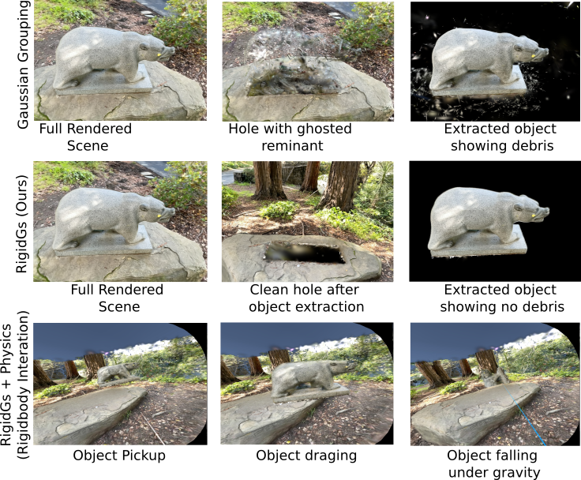

RigidGS
3D Vision · Neural Rendering
RigidGS — Object-decoupled Gaussian Splatting for VR interaction
A physics-aware 3D Gaussian Splatting pipeline that decouples objects from scenes so users can interact with Gaussian-rendered environments in VR. The system combines COLMAP, SAM2 mask propagation, LaMa inpainting, boundary regularization, and Unity/OpenXR runtime integration.
3D Gaussian SplattingPyTorchSAM2Unity/OpenXRRigid Body Interaction